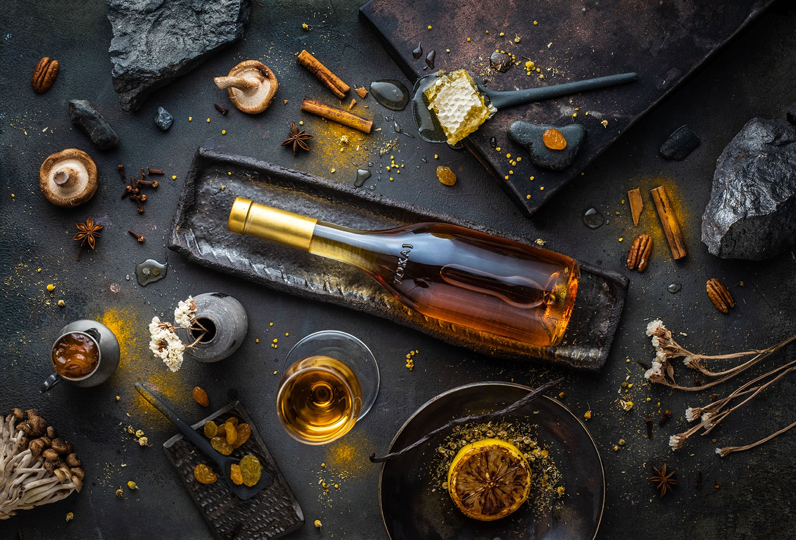
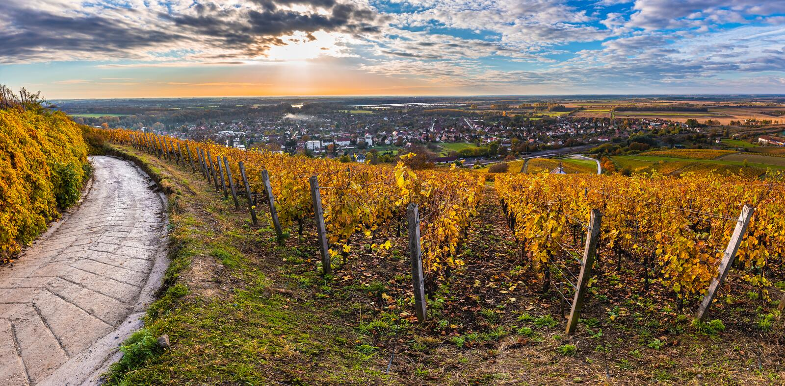
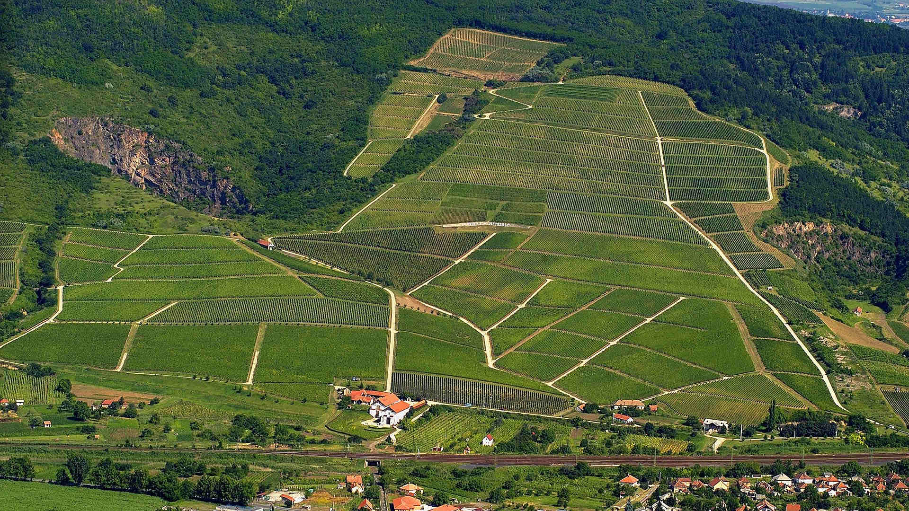

A weboldal a felhasználói élmény fokozása érdekében sütiket (cookie-kat) használ. A weboldalon való
böngészéshez,
kérjük fogadja el Cookie-szabályzatunkat. További információ:
Cookie Policy.

Tokaji Aszú
A borok királya, a királyok bora

Tokaji borvidék
A világörökség része

Tokaj-hegyalja
Vulkanikus talajkőzete ásványi
anyagokban gazdag
Borrégió és borvidék – mi a különbség?
Magyarország borkultúráját sokszínűség, eredetiség és egyediség jellemzi. Az ország területén
található 6 borrégióban 22 különböző éghajlati, domborzati, talajtani és történelmi sajátosságú borvidék
fedezhető fel.
A borok esetében általában a borvidékeket szokás feltüntetni a palackon, mely a fogyasztók számára
tökéletesen behatárolja bor készítésének helyét. A Tokaji borvidék történelmi hagyományaiból és
különleges
természeti adottságaiból adódóan önálló borrégió. A legnagyobb területű borrégió a Duna és a Tisza
folyó között elterülő Duna borrégió. A „magyar tenger” körül található borvidékeket a Balaton borrégió
foglalja magába. Az Északi-középhegységben fekvő borvidékek a Felső-Magyarország borrégiót alkotják.
Soprontól Budapest felé utazva a Felső-Pannon borrégiót érintjük, a Dunántúl legdélebbi borvidékeit
pedig a Pannon borrégió fogja össze.
A világ első zárt borvidéke Tokaj-Hegyalján alakult ki, az UNESCO 2002-ben világörökségi címmel
tüntette ki.
Területe megegyezik a borrégióéval, 5700 hektáron művelnek itt szőlőt. A borvidék jellegzetes,
ikonikus fajtái a furmint, a hárslevelű és a sárgamuskotály.
Tokaji borvidék
Tokaj és a környező 26 település alkotja a borrégiót, melynek természetes határai a Sátor-hegy, a
Kopasz-hegy, a Tisza és a Bodrog. Számos egyedisége miatt sorolhatjuk külön borrégióba, mint például
az aszúsodást elősegítő lokális klímája miatt, melyet a Zemplén védettségének és a folyók nyomán
kialakuló vizes-mocsaras területeknek köszönhet.
Rendkívül változatos, vulkanikus eredetű kőzeten helyezkednek el a dűlők, mintegy 100–300 méteres
tengerszint feletti magasságban. A tokaji aszú egyike a világ legismertebb természetes édes borainak.
Tokajban már a XVI. században konkrét leírások születtek az édes borok készítéséről és azokról a
termőhelyekről, amelyek a borvidéken belül a leginkább alkalmasak az aszúkészítéshez elengedhetetlen
alapanyag termesztéséhez.
Maga a Tokaji borvidék egy nagyjából 15 millió évvel ezelőtt kialakult vulkáni terület,amely
különleges adottságokat szolgáltat a boroknak. Az aszú annak ellenére, hogy édes bor, soha nem emiatt
különleges. A borvidéket alkotó igen változatos és a szőlő számára egyedi lehetőségeket kínáló talaj az,
amitől ez a bor akár mint ételkísérő is megállja a helyét. A borok gerincét adó savak, az
alkoholtartalom és az édesség hármasa kitűnő egyensúlyban van egymással. A tokaji édes borok és
elsősorban az aszú ettől lesz lendületes, élénk, illatában és ízében tele virágos-gyümölcsös jegyekkel.
Fogyasztásakor érezzük ugyan, hogy édes bor van a poharunkban, de a jó aszú soha nem a cukortartalomról
ismerhető fel. A termőhely sajátos, világviszonylatban is nagyon összetett, gazdag szerkezete olyan
hátteret ad az aszúknak, ami szinte semmihez nem fogható komplexitást eredményez.
Az aszúszemek kialakulása
Az aszúszemek megszületése végső soron a természet csodája. Tokaj-Hegyalja különleges mikroklímájának
köszönhető, hogy az aszúsodás ezen a területen évszázadok óta, évről évre, jelentős mennyiségben be
tud következni. A Tisza és a Bodrog-folyók közelsége, valamint a Zempléni-hegység nyújtotta védelem
fontos szerepet töltenek be a helyi mikroklíma kialakulásában. A folyók felől érkező hajnali párákat és
az őszi csapadékot követő napsütéses száraz időjárás kedvez a nemespenész, a Botrytis cinerea
(szürkepenész) megtelepedésének és elszaporodásának. Hosszú, meleg ősz után a legkiválóbb a termés.
Fontos, hogy a nemes rothadás akkor következzen be, amikor a szőlő már megérett, ugyanakkor a bogyók még
épek. Az aszúszemeket adó legfontosabb szőlőfajta a furmint, de a többi hegyaljai szőlőfajta is hajlamos
az aszúsodásra.
Aszúszemek képződése
A gombaspóra átteleléssel, a levegőmozgás révén, illetve egyéb fertőzési úton kerül a szőlőre.
Először a gázcserenyílásokon, avagy a bogyónövekedés következtében létrejött mikrorepedéseken férkőzik a
bogyó belsejében lévő tápanyagokhoz, illetve vízhez. További növekedése folytán jut csak a bogyó
felszínére, s válik szemmel láthatóvá. Ekkorra a növényi szövetek sejtfala olyan nagymértékben módosul,
hogy már nem képes többé funkcionálni, vizet felvenni, amitől a bogyó barnás kék, illetve csokoládé
árnyalatúvá válik. Ekkor dől el, hogy a rothadás melyik formája valósul meg. Amennyiben a szőlő kellő
érettségi szintet ért el, és kedvező időjárási viszonyok lépnek fel - azaz hosszú, napsütéses napok
következnek -, akkor aszőlő víztartalmának nagy része el tud távozni a bogyóhéj fent jelzett sérülésein
keresztül. Ez azt eredményezi, hogy a penészgomba "viselkedése" megváltozik, és rothasztás helyett
jótékony hatást kezd kifejteni a lecsökkent víztartalom miatt.